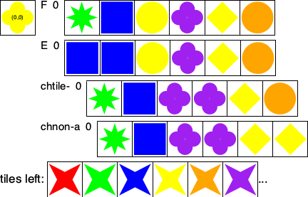
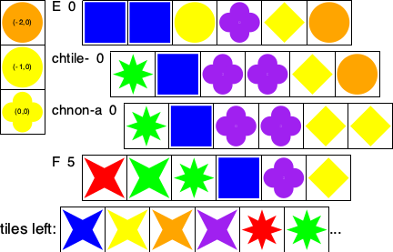
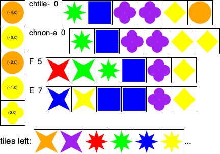
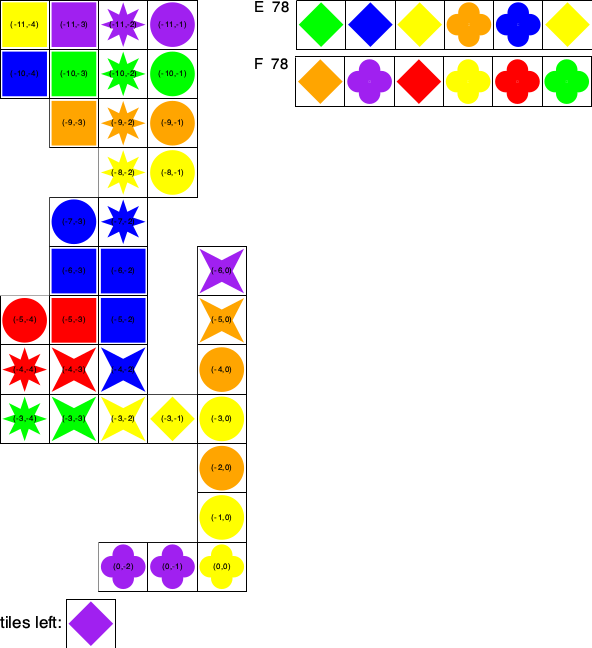

Rubric: Milestone 8
Grading: all staff
total: 535 points |
bonus: 100 points, up to and no more |
Push – Michael
Push Code/8/ToObserve/*json into every pair’s 8/.
Delivery – Michael
Michael please provide URLs for the repo that the pair is not supposed to use
delivery: 20 points |
5 points for remote.md
5 points for observer.PP in Q/Referee/
5 points for xgames-with-observer, executable possibly after running make
5 points for [0-9]-{in,out}.json
Just running xgames-with-observer may result in a crash, because they link in GUI libraries; also see below.
Test Fest – Michael
test-fest: 200 points, plus bonus points |
– 100 points, if their xgames-with-observer passes my tests; -10 per failed test
– 100 points, if their tests pass my xgames-with-observer; -10 per failed test
Bonus up to 60 points, 20 points for any test case that passes my xgames-with-observer and breaks another pair’s xgames-with-observer; up to the max specified
They can receive 40 extra points for any test case that is correct and breaks my code. But they can get those only if they complain to you and then me.
GIT Log Inspection – everyone
git-inspection: 60 points |
– 60 points, if they did not incorporate code from the wrong code base
We need to inspect the git log for the current repo. Pick two
non-trivial, large commits that add large pieces of functionality. Inspect the
alternative repo to compare the commit with existing code there. —
Observer Run – everyone
interact: 150 points |
For each assigned submission, meet with the pair during office hour (or at your convenience). Have them demonstrate the following on a machine of their choice. Then ask them to demo:
$ cd 8/ |
$ ./xgames-with-observer --show < ./ToObserver/0-in.json |
20 points for a GUI that informs users of how to navigate, how to save states;
10 points for the ability to go back and forth in the sequence of states;
10 points for images that include (1) maps, (2) player tiles, (3) scores;
10 points for for saving a state properly in a file; make sure the file is JSON;
10 points for gracefully dealing with canceled attempts to a state via a dialog (no crash). Ideally, you should be able to just continue interacting with the observer’s view.
This run must also generate a directory Tmp/ in the current directory (8/).
30 points for generating the images in Tmp/ (no partial credit);
30 points for generating 0.png ... 2.png (10 points partial credit);
30 points for conveying the same information as my screenshots for the observer.
Bonus up to 40 points, Any of you can nominate a truly impressive visualization for 40 bonus points. Each grading pod may award one set of bonus points. The pod leader organizes a vote if there’s more than one nomination.
Program Inspection – everyone
inspect: 90 points |
– 20 points, for accurate self eval
Inspect the referee for its wiring to the observer:
10 points for not linking to the concrete observer class/module;
10 points for a single point of control from which the referee informs an observer;
Do not accept code that protects every call with a conditional like thisif (this.observer_should_be_called()) then
observer.inform(a_state);
orfor(Observer o : allObservers)
o.inform(a_state);
Take off all (10) points if even one site is protected like this. This must be in a separate method.10 points for ensuring that the observer is handed every state exactly once
One way to ensure this is to hand over the state at beginning of each turn and at the end of a complete game.
- an informative purpose statement that brings across
20 points for how the observer works
20 points for how its view works.
For the second one, see below for my purpose statement, which explains both.
#; {type Command = (U False ;; end of game FLUSH ;; get ready for next game SHOW ;; open a window so that a user can view and inspect the game states RefereeState)} ;; record state
#; {μf.Command -> (U f Void)} ;; collect game states for viewing and inspection after the game is complete ;; <– previous state ;; –> next state ;; blank save current state as JSON via file dialog ;; EXTRA "s" save current state as image via file dialog
functional code:
(define (observer s) (cond [(false? s) ...] [(eq? FLUSH s) ...] [(eq? SHOW s) ...] [else ... observer]))
object-oriented code:
(define observer% (class object% (super-new) (field [*complete #false] [*live-list '()]) (define/public (add-state s) ...) (define/public (show-states) ...) (define/public (flush) ...) (define/public (done) ...)))
Design – everyone
design: 15 points |
The key to designing this protocol is to take our logical protocol and supplement it in three ways:
5 points for showing that each call from the referee to a player goes across “the wire” via a remote proxy;
5 points for pointing to JSON representations for each call: general shape of calls, its arguments, and results;
They may point to our JSON definitions for some of these, which is acceptable.
5 points for specifying how the client-players sign up with our server.
You will need to read this document carefully to tease out whether/how they satisfy these constraints.
Observer Images
 |
 |
 |
 |